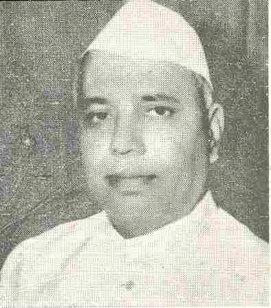

1_Upload_2153.pdf: Detail-1

Yashwantrao Chavan
Continues:
Ministry of Home Affairs[Deputy Prime Minister]
o-Yashwantrao_Chavan.html
Page1/ 2
No Extract|detail_language_generator
Emptytenures|tenure_builder
EmptyNo Extract|details_differ
EmptyofficerIDs|id_assigner_vocab
[{ID: Q1764541, name: , method: computed }]No Extract|order_tagger
Emptyorder|order_builder
[{name: Y.B. Chavan continues: [>Ministry of Home Affairs<,>Deputy Prime Minister<]relinquishes: []assumes: []}]post_infos|post_parser_onsentence
[PostInfo]No Extract|para_fixer
Emptylist_items|list_finder2
[{ marker: 1, line: Shri Y.B. Chavan, to be Deputy Prime Minister and in charge of the Ministry of Home Affairs;]lines|line_finder
Emptynum_marker_angle|rotation_detector
[-2.1222483281529674]num_markers|num_marker
[{ text: 1, val: 1 type: 1 }]No Extract|infer_layoutlmv2
EmptyNo Extract|html_generator
Emptyreoriented_angle|orient_pages
[0]page_image|page_image_builder_embedded
[PageImage]meta|meta_writer
[{URL date: 2021-04-27 10:16:35, archive_sha: 7MPNMOR4T2D5OBCNDJEJTUYJXBQ7SYNS, matched: True }]No Extract|gcv_recognizer
Empty